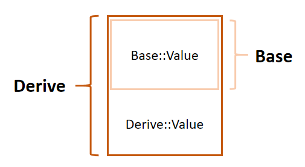
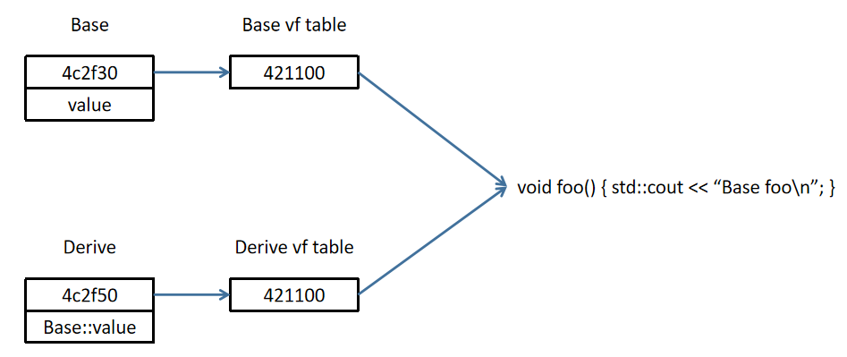
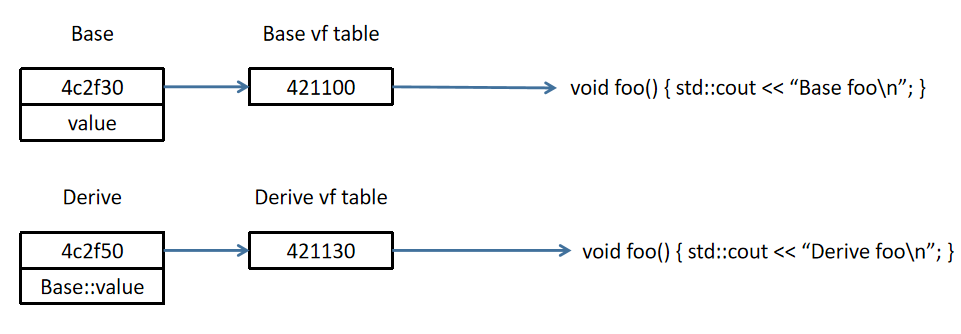

面向对象程序设计（Object-oriented programming, OOP）是种具有对象概念的程序编程典范，同时也是一种程序开发的抽象方针。
封装
装是指把数据与操作这些数据的函数绑定到一块，抽象成一个类；封是指将这些数据与函数对外部隐藏，避免干扰与误用，从而确保安全。C++ 通过三大访问修饰符支持这一特性，可以看到，隐藏级别是逐步提高的。
| 可访问性 | 本类 | 友元类/函数 | 派生类 | 其它 |
|---|---|---|---|---|
public |
√ | √ | √ | √ |
protected |
√ | √ | √ | × |
private |
√ | √ | × | × |
1 | class Foo { |
继承
继承允许一个类（派生类）在另一个类（基类）的基础上进行设计，这使得创建和维护一个应用程序变得更容易，也达到了重用代码功能和提高执行效率的效果。
同样的，继承方式也有公有继承(public)，保护继承(protected)，私有继承(private)三种，如果未显式声明继承方式，则默认为私有继承。
- 公有继承：基类的公有/保护成员将成为派生类的公有/保护成员，基类的私有成员仍不能直接被派生类访问；
- 保护继承：基类的公有/保护成员将成为派生类的保护成员。
- 私有继承：基类的公有/保护成员将成为派生类的私有成员。
1 | class Base { |
上面展示了一个基本的继承过程。可以看到 Derive 可以将 Base 中的成员变量/函数进行覆盖，在 Derive 的命名空间中优先取 Derive 的成员。但覆盖后，基类的变量并不是消失了，而是依然可以通过 Base::value 进行访问，这是怎么做到的？类继承时，内存是如何分配的？不妨加入以下代码进行分析：
1 | std::cout << sizeof(Base) << " " << sizeof(Derive) << '\n'; |
可以看到，Derive 和 Base 的类大小分别为 4 和 8，恰好是 1 个 int 和 2 个 int 的大小，并且将 Derive 对象地址重新解读为 int* 时，发现有连续的一片内存分别存储了两个 int 值 1 与 2——这恰好是 Base 和 Derive 两个类对 value 初始化的值。这样一来就明朗许多——Derive 类对象的内存里最开始那一部分（4B）是专门分配给基类 Base 的，并且其内存布局为：

虚继承
再来点更复杂的情况：
1 | class Base { |
根据上面的输出，我们发现，Final 分别继承了 Derive1 与 Derive2，也为这两个直接基类分配了各 8B 的内存空间。并且，Final 中的内存布局也是先 Derive2 后 Derive1，这与 Final 类声明中继承列表中的基类顺序是一致的。
但很快也就发现了问题：Derive1 与 Derive2 的基类 Base 并不位于同一片内存，这就导致对 Derive1 的那个 Base 进行修改时，并不会影响 Derive2 的 Base，还产生了二义性（上面这段代码中，Final 无法使用 Base 的变量）与数据冗余。这是我们不希望发生的——我们通常反而更希望 Final 的族谱中只有唯一的 Base。
如何解决这个问题？答案为使用关键字 virtual 的虚继承。对于每个指定为 virtual 的不同基类，最终派生对象中仅含有该类型的一个基类子对象，即使该类在继承层级中出现多次也是如此，只要它每次都以 virtual 继承。
1 | class Base { |
多继承在现实应用场景中容易出问题，尽量避免使用多继承。
多态
多态，即多种形态，能够使得不同的对象去完成同一件事时，产生不同的动作和结果。最常见的多态有静态多态与动态多态两种，
静态多态
静态多态依靠函数重载实现，在编译时完成绑定，编译器根据函数实参的类型，推断出要调用的函数，如果有对应的函数就调用该函数，否则出现编译错误。
1 | class Foo { |
动态多态
动态多态依靠类的虚函数实现，在运行时完成绑定，编译器根据对象类型执行相应函数。
先来说说什么是虚函数。前面提到了虚继承，用到 virtual 关键字，事实上，如果一个函数被 virtual 修饰，那么这个函数就成为了虚函数。正常情况下，虚函数表现的和普通函数一样，而一旦通过基类指针或引用调用虚函数，多态发生了。
1 | class Base { |
不难发现，base_ptr 与 base_ref 虽然为 Base* 与 Base& 类型，但却能与派生类 Derive1 / Derive2 绑定，并且这两者调用虚函数 foo() 时，执行的效果如同派生类对象执行的那样，并且进一步发现，调用哪个类型的虚函数，取决于基类指针指向或引用的对象是哪种类型的对象。这便是多态。
而不使用指针或引用直接调用，则与普通函数无异，就比如 base.foo() 表现的那样。
值得注意的是，需要派生类进行了虚函数的重写/覆盖才能达到这一效果，即要求派生类中有一个和基类完全相同的虚函数。在这里，Base 和 Derive 的 foo() 函数（不管 virtual）正是完全相同的。如果派生类并没有进行重写，则会按照派生类的直接基类来。在多继承语境下，需避免二义性。
1 | class Base { |
有一个例外，就是协变，也就是基类和派生类的返回值类型的相对关系与基类和派生类的相对关系一样，并且继承方式也相同（即族谱路线都一样），此时也满足多态，不需要返回值类型相同。
2
3
4
5
6
7
8
9
10
11
12
13
14
15
16
17
18
19
20
21
22
23
24
25
26
27
28
29
30
31
32
33
34
35
36
37
class B : public A {};
class C : public B {};
class Base {
public:
virtual A *foo() {
std::cout << "Base foo\n";
return new A;
}
};
class Derive : public Base {
public:
B *foo() {
std::cout << "Derive foo\n";
return new B;
}
};
class Final : public Derive {
public:
C *foo() {
std::cout << "Final foo\n";
return new C;
}
};
int main() {
Base b;
Final f;
Base *base_ptr = &f;
base_ptr->foo();
}
// output:
// Final foo继承族谱分别为 A->B->C 与 Base->Derive->Final，并且均为公有继承，于是协变成立。
虚函数表
那么问题来了，C++ 是如何实现多态的？先看下面这串代码：
1 | class Base { |
类 Base，在仅有一个虚函数和一个 int 型变量的情况下，内存大小竟然是 16B。事实上，任何一个拥有虚函数的类，无论有多少虚函数，都会在内存空间的最开始分配 8B 的空间（64 位电脑的 feature），用于存放指向虚函数表的指针。所谓虚函数表，实际上就是存放了所有虚函数指针的一片内存。这么一来，Base 大小为 16B 也就好理解了——前面 8B 为虚函数表指针，后面 8B 是为了进行内存对齐，而 Derive 的内存则是完全分配到了基类。
在上面的代码中将 main() 改为以下语句，则可以比较清楚地观察内存布局：
1 | using func = void(*)(); |
不难发现，Derive 与 Base 对应两张不同的虚函数表，并且表中的存的第一个指针正是指向各自的成员函数 foo()。
之所以说动态多态是在运行时绑定，是因为编译时编译器并不确定指向的到底是哪个类型的对象，只有在运行时才能确定，去对应的虚函数表中找到对应虚函数并执行。
再来看看派生类未进行重写的情况：
1 | class Base { |
说明在未出现重写的情况下，派生类依然在基类的对应位置新建了一张属于自己的虚函数表，但里面存放的指针仍然指向了 Base::foo()。而上面重写了基类虚函数的派生类，则会将自己的虚函数表对应那一项进行覆盖。
之前说过，当一个派生类继承基类时，派生会继承基类的函数的调用权。所以如果一个基类包含了虚函数，那么派生类也可调用这些虚函数，换句话说，一个类继承了包含虚函数的基类，那么这个类也拥有自己的虚表。
于是，一份关于内存分配的构想已经隐隐约约浮现出来了。


更详细的关于虚函数内存的机制可以看这篇文章。
纯虚函数
说了那么多，虚函数到底有啥用？
我们目前已经掌握的知识有，可以通过基类指针或引用绑定派生类，并在调用虚函数时实现多态，根据这一特性，如果希望一个函数形参面向目标为所有族谱成员的话，就不需要对所有成员挨个实现，直接将形参设为基类指针，在需要实现多态的功能处设为虚函数即可。这和 std::function 一样，都起到类型擦除的作用。
这是最大的作用了。
以及，还有一个特殊的虚函数，称为纯虚函数，声明为 virtual type funcname() = 0;。
拥有纯虚函数的类称为抽象类，无法实例化，而仅拥有纯虚函数的类称为接口类。纯虚函数只是一个接口（interface），是一个函数的声明而已，需要留给派生类去进行实现。只有实现了该接口的派生类才能进行实例化，否则依然是抽象类，无法实例化。
注意
功能如此强大的特性，必然涉及到一些限制 or 注意事项，总的来说有以下几点：
- 普通函数（非类成员函数）不能为虚函数。这是显而易见的，因为实现虚函数的基础之一正是类的继承特性；
- 静态函数不能是虚函数。毕竟是全类共享，不存在继承一说；
- 构造函数不能是虚函数。因为在调用构造函数时，虚表指针并没有在对象的内存空间中，更别说去虚表中找对应的虚函数了，必须要构造函数调用完成后才会形成虚表指针；
- 内联函数不能是表现多态性时的虚函数。这点在 inline 那篇文章中提到过了；
- 当可能用到基类指针/引用绑定派生类时，基类的析构函数必须为虚函数。这是因为当出现
Base* ptr = new Derive这样的代码时，虽然ptr是Base类的指针，但我们实际上还分配了一个Derive类的空间，如果析构函数非虚，则会执行Base类的析构函数，而属于Derive的那一部分并没有被析构。为了程序安全运行，我们应该要调用派生类的析构函数，也就是通过将基类析构函数设为虚函数来实现；